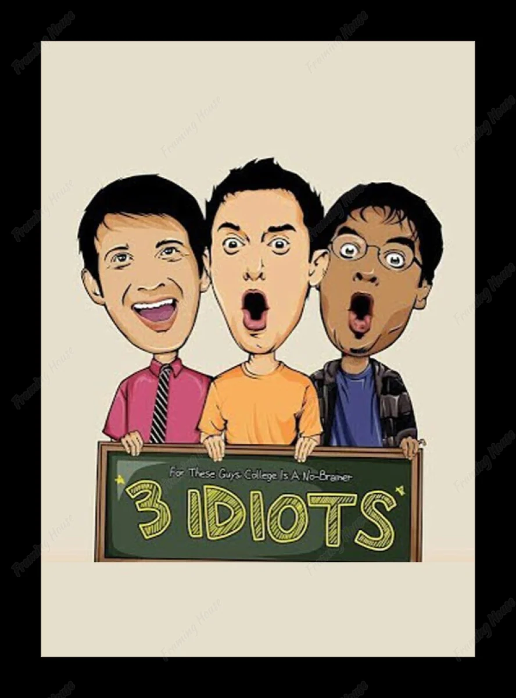

3 idiots
25 December 2009
My Favorite Movies
which was considered to a "wide domestic release for a Bollywood film" at that time, according to trade analysts.
Major multiplexes allotted more than 95% of screens for the film, prior to the release.
is a satire about the social pressures under the Indian education system.
Biographies
- Is 3 Idiots based on real story
3 idiots is based on a novel 'Five Point Someone' by an Indian Author 'Chetan Bhagat' .
The novel is a fiction. yes he did study in IIT-Delhi and hence some small incidents are inspired from real life,
but most of it is Fiction. Is the "Gadar" movie based on real events? -
The movie won six Filmfare Awards including Best Film and three National Film Awards including Best Popular Film.
Overseas, it won the Grand Prize at Japan's Videoyasan Awards[11][12][13] while it was nominated for Best Outstanding Foreign Language Film at the Japan Academy Awards[14][15] and Best Foreign Film at China's Beijing International Film Festival.[16]
In 2012, a Tamil remake of the film was released and it was called Nanban and in 2017, a Mexican remake of the film was released and it was called 3 Idiotas.